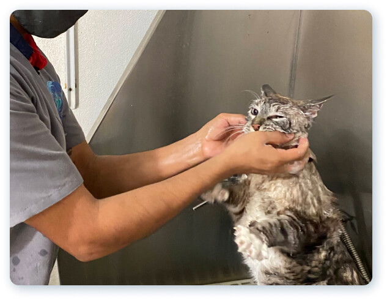
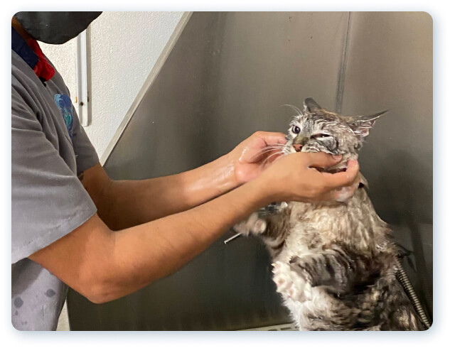

De acuerdo a nuestro compromiso con la salud y el bienestar de los animales, en Profauna ofrecemos servicios médicos veterinarios especializados para estos peculiares miembros de tu familia.
Desde consultas generales, hasta cirugías de emergencia.
- Atención de emergencia
- Medicina general
- Medicina preventiva
- Expedición de certificados
- Hospital
- Procedimientos ambulatorios
- Estancia
- Velación
EMERGENCIAS 24/7
(664) 200 24 51 | (664) 200 24 61
Estamos para ayudarte
Atención inmediata 24/7 a pacientes en estado crítico.
- Consultas
- Tratamientos médicos
- Estudios de gabinete (radiografías, ultrasonido, electrocardiograma, ecocardiograma)
- Ultrasonido (paneo y estudio ultrasonográfico)
- Desparasitación general
- Vacunas múltiples caninas
- Vacuna giardia
- Vacuna bordetella
- Vacuna leucemia
- Vacuna de rabia general
- Vacuna triple viral felina
- Vacunas anuales perro
- Vacunas anuales gato
- Certificado de salud
- Certificado de vacunación
- Certificado de desparasitación
- Curaciones
- Hospitalización
- Observación Médica
- Transfusión sanguínea
- Cirugías Ortopédicas
- Cirugías de tejidos blandos
- Cirugía general
- Esterilización
- Castración
- Cesárea
- Limpieza ótica
- Limpieza dental
- Extracción dentales
- Estudios Radiográficos contrastado
- Hospedaje
- Guarderia
- Cremación con recuperación
- Cremación sin recuperación
 

Contamos con un servicio completo de estética que siempre se realiza por un experto, quien utiliza los mejores productos de belleza que harán lucir a tu mascota espectacular. Independientemente de cuál sea la raza o especie siempre le damos el tratamiento y atención adecuado para que luzca radiante y saludable.
- Estética para perros, gatos y conejos de todos los tamaños
- Baño para perros, gatos y algunas especies exóticas.
- Baño medicado
- Corte de uñas
- Limpieza de glándulas
Nuestro laboratorio es uno de los más equipados en medicina veterinaria a nivel estatal, tenemos todas las herramientas y servicios necesarios, los cuales nos permiten ofrecer una calidad de 1er nivel, para ese integrante especial de tu familia.
- Curva de glucosa
- Prueba de glucosa
- Prueba cortisol
- Determinación de t4
- Espermatobioscopía
- Prueba anaplasma
- Prueba borrelia
- Prueba cruzada
- Prueba de gusano del corazón
- Prueba serológica cuádruple
- Prueba tipo sanguíneo
- Prueba serológica erlichia canis
- Prueba serológica moquillo
- Prueba serológica parvovirus
- Biometría hemática
- Citología
- Coproparasitoscópico
- Cultivo
- Examen de piel
- General de orina
- Histopatológicos
- Progesterona
- Química sanguínea